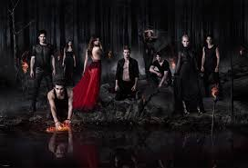
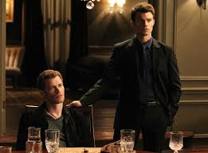
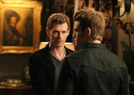

The Vampire Diaries is an American supernatural teen drama television series developed by Kevin Williamson and Julie Plec, based on the book series of the same name written by L. J. Smith. The series premiered on The CW on September 10, 2009, and concluded on March 10, 2017, having aired 171 episodes over eight seasons.
Season 1 episode-1
NINA DOBREV, PAUL WESLEY and IAN SOMERHALDER star in this new series, based on the best-selling book series, of two vampire brothers at war for the soul of 17-year-old Elena. episode-2
Elena goes to the Salvatore house to talk to Stefan, but finds Damon there instead, who reveals surprising information about Stefan's past. Vicki begins to remember the attack. episode-3

Elena invites Stefan and Bonnie to dinner, hoping that the two will bond, but the evening is disrupted by the unexpected and unwelcome arrival of Damon and Caroline. episode-4

stefan escorts Elena to the town's Founder's Party. At the party, Damon tells Elena a story about the Salvatore family, leaving Elena with questions Stefan refuses to answer. episode-5

Stefan is hopeful of his plan to get rid of Damon, and decides to reveal parts of his past to Elena. Bonnie seeks advice from her grandmother (JASMINE GUY - A Different World).
Season 2episode-1
In flashbacks, Stefan reveals to Elena the Salvatore family history, including how his rivalry with Damon began. In the present, Damon impulsively takes control of Vicki's future. episode-2
Elena goes to the Salvatore house to talk to Stefan, but finds Damon there instead, who reveals surprising information about Stefan's past. Vicki begins to remember the attack.
episode-3
Bonnie's abilities surprise Damon. Elena asks Jeremy not to see Vicki. To cheer Vicki, Matt takes her to the high school's haunted house, but the night takes a terrifying turn.
episode-4
Stefan gets a surprise birthday visit from an old friend, Lexi (ARIELLE KEBBLE - The Grudge 2, Gilmore Girls). Caroline tries to get Damon's medallion back from Bonnie.
episode-5
Jeremy gets a break from the mysterious new history teacher, Alaric Saltzman (MATT DAVIS - Blue Crush). Damon reveals to Stefan the stunning reason he returned to Mystic Falls.
Season 3episode-1
Time:40mins
When Sheriff Forbes (MARGUERITE MACINTYRE) tells Damon of another attack, he offers to track down the killer, learning startling information about the town's founding families. episode-2
Time:40mins
Jeremy gets a break from the mysterious new history teacher, Alaric Saltzman (MATT DAVIS - Blue Crush). Damon reveals to Stefan the stunning reason he returned to Mystic Falls. episode-3
Time:40mins
When Sheriff Forbes (MARGUERITE MACINTYRE) tells Damon of another attack, he offers to track down the killer, learning startling information about the town's founding families. episode-4
Time:40mins
Damon goes to Georgia to surprise an old flame, Bree (GINA TORRES - Standoff, Firefly), and enlist her help. Meanwhile, Stefan uncovers a startling clue to the past episode-5
Time:40mins
The Mystic Grill's Ben (SEAN FARIS) comes to Bonnie's aid. Damon and Stefan accompany Elena to a school dance with a 1950s theme. Alaric (MATT DAVIS) introduces himself to Damon.
Season 4episode-1
pilot intro about the characters episode-2 episode-3 episode-4 episode-5 Season 5episode-1
pilot intro about the characters episode-2 episode-3 episode-4 episode-5